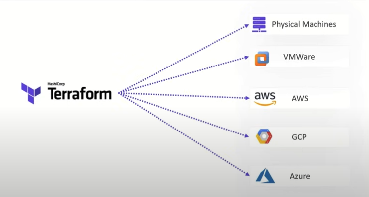

Updated ( 2024-05-06 )
| Command | Description |
|---|---|
|
|
- initializes the current directory as terraform project (requires at least one *.tf file) - installs necessary provider plugins and creates the terraform project skeleton (.terraform directory where packages are stored and the .terraform.lock.hcl file) - ( |
|
|
- installs necessary provider plugins (required after creating a new module) |
| | | |
|
|
- creates an execution plan as described in the configuration files - 1) request deployed resources for their current state - 2) displays on the terminal what infrastructure changes would be performed if we run terraform apply - ( - ( - ( |
|
|
- applies changes to the infrastructure according as described in the configuration files - 1) request deployed resources for their current state - 2) apply changes - ( - ( - ( - ( |
|
|
- destroys the infrastructure what was created using configuration files - ( |
| | | |
|
|
- displays the infrastructure describe in the terraform state file (not the actual deployed infrastructure state) |
| | | |
|
|
- displays all or the specified output variables |
|
|
- displays all used providers by the terraform project |
|
|
- reads the project's config files then generates and outputs a "digraph" object (readable by GUI programs in order to display the infrastructure [link]) |
| | | |
|
|
- terraform style formats all *.tf file in the current directory - ( |
|
|
- reads the project's config files and syntax validates them |
terraform providers (registry.terraform.io)
terraform providers docs (registry.terraform.io)
- terraform has also provisioner support for local|remote script execution and file transfer but terraform itself recommends not to used it (but as last resort) [link]
- terraform in an open source infrastructure as code tool, it automates the provisioning of computing resources based on configuration (uses HCL Hashicorp Configuration Language)
- declarative approach
- HCL is a declarative language, meaning we declare what we need and terraform performs the necessary tasks
- immutable infrastructure
- terraform is a provision tool, in deploys or destroys infrastructure resources (but does not modify them), meaning if we change someting about a deployed resource, the resource is 1st destroyed then redeployed again
- partial resouce deploy (on error)
- in case of deploy failure, terraform still deploys resources it can, there's no rollback (ex: out of 10 resources 1 fails, terraform deploys the remaining 9)
- deployments are idempotent, so on deploy already deployed resources are not modifed
// terraform project files ----------------------
.
├── .terraform // directory where provider plugins and modules are installed
├── .terraform.lock.hcl // lock file for the project (pins installed provider plugin and module versions)
├── terraform.tfstate // this is where the deployed infrastructure is tracked (the blueprint of the infrastructure)
├── terraform.tfstate.backup // infrastructure track backup (1 version older than the terraform.tfstate file for backup)
- terraform providers are plugins that enable terraform to interact with various cloud platforms, services, and platforms
- in the project providers work the same way as packages do in a javascript & python project, they must be installed, lock file locks the environment, etc...
- each provider has it documentation that describes the way it connects to its target plantform [link]
- in the root module we specify the required providers and their configuration for the project (usially in the providers.tf file)
terraform {
required_version = "ver " // specifies the terraform version the project requires
required_prodivers {
providerName = { // list required providers for the project
source = providerSource
version = versionConstraint
- a list of accepteble versions [link]
- supported operators: =, !=, <, <=, >, >=, ~> ((pessimistic constraint operator) allows to upgrade patch version only)
ex: ">= 0.12.0, < 2.0.0" / "~> 1.8" (can use any 1.8 patch)
}
...
}
}
provider "providerName " { // configures the provider such as authentication credentials and region
...
}
terraform {
required_version = ">= 0.12.0, < 2.0.0"
required_providers {
azurerm = {
source = "hashicorp/azurerm"
version = "=3.41.0"
}
}
}
provider "azurerm" {
features {}
skip_provider_registration = "true"
subscription_id = <subscriptionId> // authenticates the provider
tenant_id = <tenantId>
}
- terraform keeps track of the deployed infrastructure in a state file, it's considered as single source of truth for the deployed infrastructure (should not be edited manually)
- this file (terraform.tfstate) also keeps important meta data like dependencies, caching, etc... (dependency is very important for the deploy|destroy order (ex: the vnet must be create before the virtual machine))
- state lock
- locking is basically allowing single user usage of the state file at a time
- the locking mechanism is iplemented by the used backend (ex: Azure blob storage is automatically locks the container while the terraform state is used)
- backend (state file location) [link]
- terraform calls "backend" the location where the state file is stored
- by default the state file is stored in the current directory, but we can specify local or remote backends with the backend block [link]
// providers.tf (recommended file) -----------------
terraform {
backend "backend " { // configures the backend for this terraform project
args...
}
}
// providers.tf (file) ----------------------------------------------
terraform {
required_version = ">= 0.12.0, < 2.0.0"
backend "local" {
path = "/Users/diarpall/terraform/terraform.tfstate" // local backend location
}
}
- a compute resource is described as an object, depending on the resource it accepts different attributes and has different return values
- dependency resolution
- by default terraform does implicit dependency resoluiton, it figures out resources depending on each other on its own (declaration order does not matter)
- however we can explicitly specify the dependencies of the resource with the depends_on meta attribute
resource "provider _resourceType " "name " { // describes a resource
self // references this resource
attr = val
...
}
// referencing block attributes & return values ----------------------------
resource "providerA _resourceTypeA " "resourceNameA " { // each resource has return attributes (that should be documented)
attr = val
}
resource "providerB _resourceTypeB " "resourceNameB " {
attr = providerA _resourceTypeA .resourceNameA .attr|returnAttr // referencing attr or the returnAttr of the above resource
}
// explicit dependency resolution ----------------------------
resource "providerA _resourceTypeA " "resourceNameA " {
...
}
resource "providerB _resourceTypeB " "resourceNameB " {
...
depends_on = [ // explicitly depends on resource resourceNameA
providerA _resourceTypeA .resourceNameA
...
]
}
// dynamic blocks ------------------------------
// some resource include repeatable nested blocks in their arguments that can be declared with the dynamic block [link]
resource "local_file" "testFile" {
filename = "./testFile1.txt"
content = random_string.random_content.result // references the below resource's result return attribute (check docs)
}
resource "random_string" "random_content" {
length = 1000
}
resource "local_file" "testFile" {
filename = "./testFile1.txt"
content = random_string.random_content.result
depends_on = [ // we explicitly specify dependencies (in this situation we don't have to, but that's how its done :))
random_string.random_content
]
}
resource "random_string" "random_content" {
length = 1000
}
- a data sources is a resource which is not controlled by terraform, we use data sources in order to read some data from a resource
- in order to read some data source we need a provider that supporst this feature [link]
- we can even read a terraform state as data source [link]
data "provider _resourceType " "resourceName " {
attr = val
...
}
// data source usage ------------------------
someCodeBlock {
attr = data.provider _resourceType .resourceName .returnAttr // each data resource type has documented return attributes (returnAttr )
}
resource "local_file" "testFile" {
filename = "./target.txt"
content = data.local_file.src.content // the read output is used here
}
data "local_file" "src" { // file read as data source
filename = "./source.txt"
}
- meta arguments are available in all resources, they perform different 'meta' task on the resource
// count ----------------------------------
resource|module "name " {
count = exp:->int // runs the resource or module the number of times (starts with 0 included)
// usage --------
count.index // current iteration's int
}
// for_each ------------------------------------
resource|module "name " {
for_each = exp:->map|set // runs the resource or module the number of times as many members the map|set has
// usage --------
each.key // current iteration's key
each.value // current iteration's val
}
// depends_on ----------------------------------
// explicit dependency resolution (described above)
// provider ------------------------------------
// sets hich provider the resouce will use [link] (overrides the global provider for this resource)
// lifecycle ----------------------------------
resource "name " {
lifecycle {
lifecycleMetaArgument
- create_before_destroy - creates the new resource before destroying the old one
- prevent_destroy - prevent destroying the resource
- ignore_changes - ignore changes
- replace_tirggered_by - replaces the resource only when any of the listed expression chagnes
// configures the resource behaviour for different life events [link]
}
}
resource "local_file" "testFile" {
count = 3 // create's 3 files
filename = "./target_${count.index + 1}.txt"
content = "Some file content in file number ${count.index + 1}"
}
// main.tf (file) --------------------------
module "module1" {
source = "./module1"
count = 3 // calls the module 3 times with the iterated input varialbe values
file = {
path = "./testFile${count.index}"
content = "File ${count.index} content"
}
}
// ./module1/main.tf (file) ----------------
resource "local_file" "testFile21" {
filename = var.file.path
content = var.file.content
}
// ./module1/variables.tf (file) ----------------
variable "file" {
type = map(string)
default = {
path = "./someFile.txt"
content = "Some file content"
}
}
resource "local_file" "testFile" {
for_each = toset(["./Joe's File.txt", "./Sally's File.txt"])
filename = each.key
content = "Some file content"
}
// main.tf (file) --------------------------
module "module1" {
source = "./module1"
for_each = { // creates 2 files
"./myFile.txt" = "My file's content"
"./yourFile.txt" = "Your file's content"
}
file = {
path = each.key
content = each.value
}
}
// ./module1/main.tf (file) ----------------
resource "local_file" "testFile21" {
filename = var.file.path
content = var.file.content
}
// ./module1/variables.tf (file) ----------------
variable "file" {
type = map(string)
default = {
path = "./someFile.txt"
content = "Some file content"
}
}
- we can specify a pre and post condition check for a resource, data source or output
resource|data|output... {... lifecycle { precondition { // runs before deploying (prevents deploy on fail) condition =cond // false = failed condition error_message =exp:->str } postcondition { // runs after deploy (on fail stop any further actions but does not undo the actions already taken) condition =cond // false = failed condition error_message =exp:->str } } }
resource "local_file" "testFile" {
filename = var.some_file.name
content = var.some_file.content
lifecycle {
precondition {
condition = endswith(var.some_file.name, ".txt")
error_message = "File extension is not .txt"
}
postcondition {
condition = length(var.some_file.content) > 10
error_message = "File content is too short"
}
}
}
variable "some_file" {
type = map(string)
default = {
name = "./myFile.txt"
content = "some content"
}
}
- we can check and assert error messages without interrupting any terraform operations (also can be used to check resources that are not controlled by terraform)
check { // evaluated as last step of terraform plan or apply
data ... { // data source can be used to read data (scoped within this block (does not break terraform operation on fail))
...
}
assert { // we can have 1 or more assert block(s)
condition = cond // false = failed condition
error_message = exp:->str
}
}
resource "local_file" "test_file" {
filename = "./someFile.txt"
content = var.file_content
}
check "check" {
assert {
condition = length(var.file_content) > 0 // checking input variable
error_message = "Empty file!"
}
}
variable "file_content" {
type = string
default = "some file content..."
}
check "check" {
data "local_file" "another_file" {
filename = "./another_file.txt"
}
assert {
condition = length(data.local_file.another_file.content) > 0
error_message = "Empty file"
}
assert {
condition = data.local_file.another_file.content == "Hello World!"
error_message = "Invalid file content"
}
}
- at plan this will warn because the resource is not yet deployed (at apply we expect the check to pass)
resource "local_file" "test_file" {
filename = "./someFile.txt"
content = "some file content..."
}
check "check" {
data "local_file" "test_the_test_file" { // reading the deployed file (on terraform plan this will wran because the resource is not yet deployed)
filename = "./someFile.txt"
}
assert {
condition = data.local_file.test_the_test_file.content == "some file content..."
error_message = "Invalid file content"
}
}